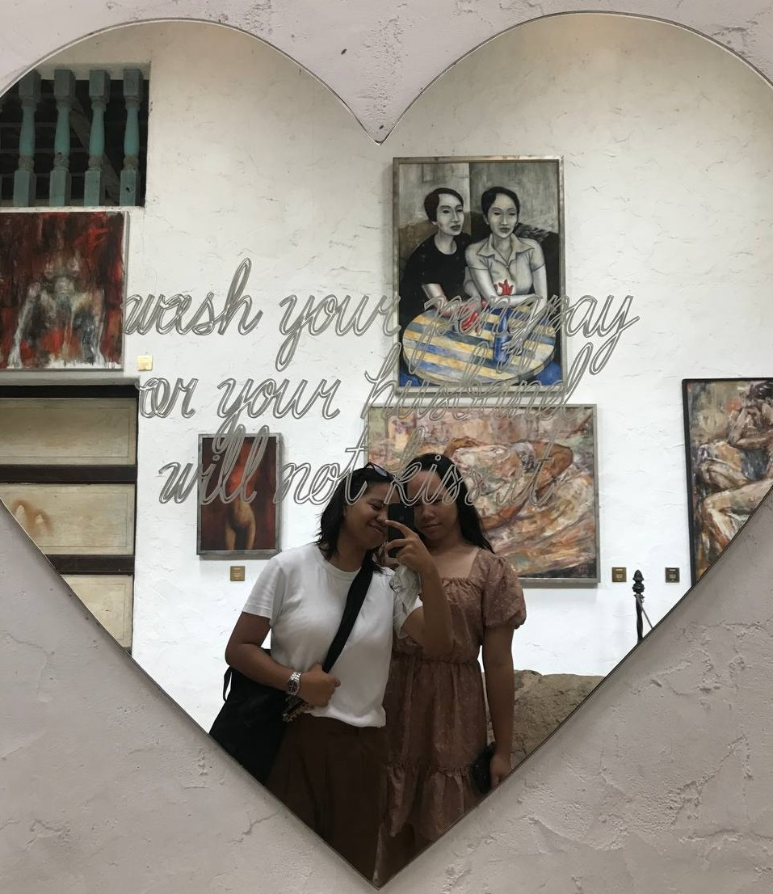

My Love
This is Hannah Yasming Y. Arroyo, the most beautiful person I’ve ever seen. She is the plot twist of my life—someone who made me feel loved and cared for. of her, my confidence has slowly started to rebuild. She’s now my constant support system, always there for me, and I love her with all my heart.
My EXO
This is EXO, my first and only favorite group of men. They were my first crushes and the first ones to become my support system. They gave me strength and became my escape and joy. EXO originally had 12 members, but now there are 9. They are incredibly talented, both as amazing singers and dancers. Their friendship and brotherhood have made me love and admire them even more.